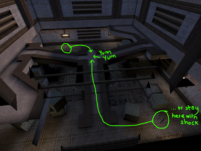

Mapping For Jailbreak/The Arena
The Arena
**Spoondog fights Sexmachine in the arena**... <Sexmachine> Ah crap...
The arena is a perfect place to implement that risk balance stuff I was talking about earlier. In fact, take a look at any of my levels and you will find that the arena will have some kind of life-threatening decision to make.
Actually, a good example is Snowdog's JB-Talaeron (UTJB) – you have the choice of staying low with your shock-rifle or going onto the rise and getting the damage amp (I usually stay low as the person getting the damage amp is in the perfect spot for a good combo...).

JB-Talaeron's arena – safe shock rifle or risky amp? |
Usually I make my arena's based on one simple decision and that is enough – the players are only going to spend a little while in here, it doesn't need to be a whole deathmatch level in itself (even though DavidM's JB-Nifam (UTJB) and my JB-DarkAges (UTJB) arenas are actually released Deathmatch maps – we were just lazy!). Anyway, at least make sure you have an arena – a JB map without an arena is unheard of these days.
Previous: /Boring Jails – Next: /Death Sequence